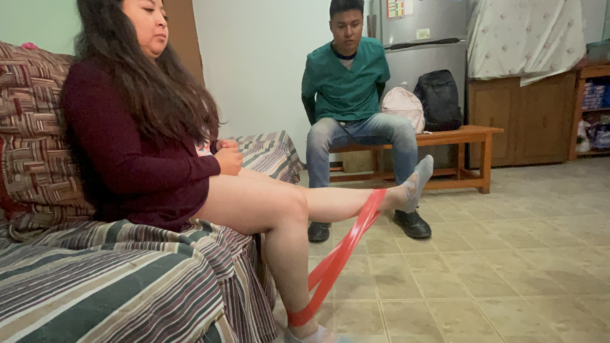
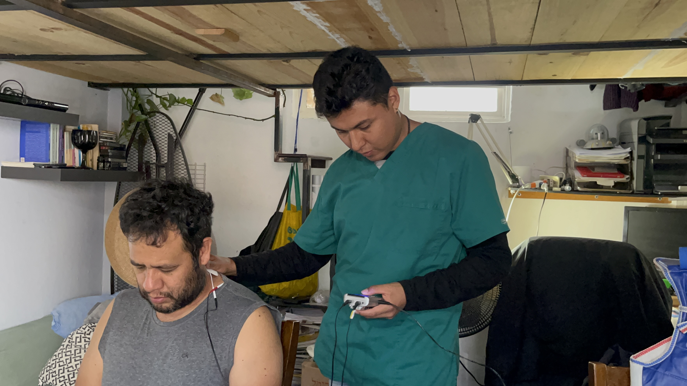
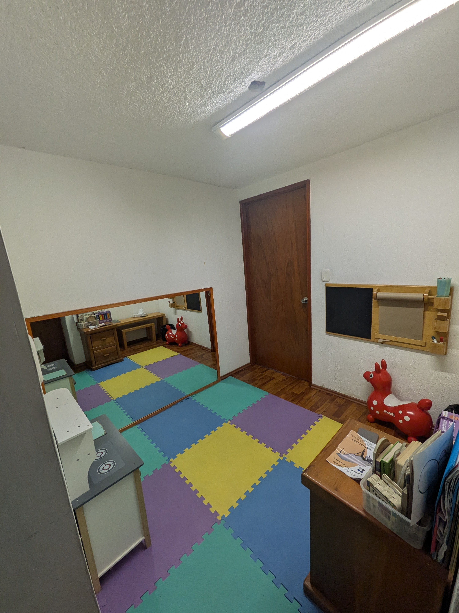
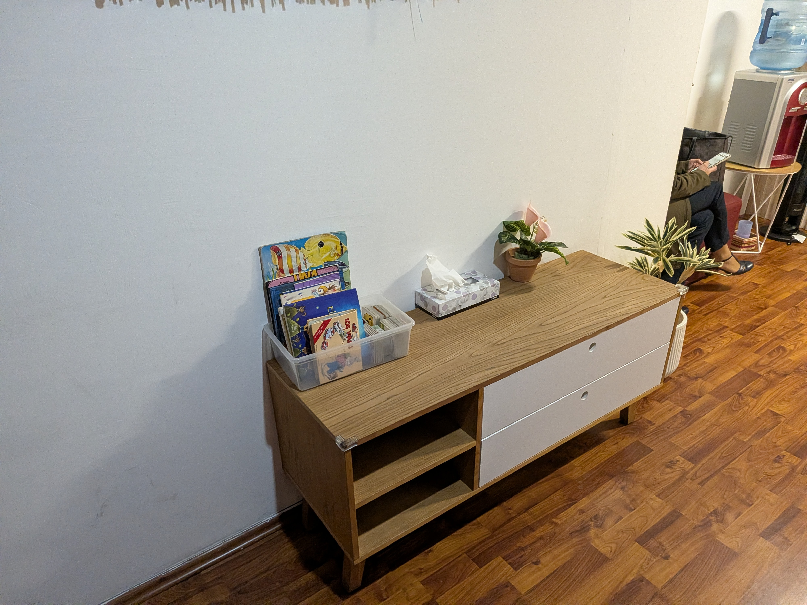

BioKinessis
"Sanando desde dentro para florecer por
fuera"
Una marca que evoluciona, se adapta al futuro y se mantiene en constante crecimiento junto con su comunidad.
Quiénes Somos
Nuestra Esencia
BioKinessis nace con la convicción de que muchas alteraciones físicas, mentales y emocionales pueden prevenirse. No tratamos únicamente síntomas ni enfermedades. Acompañamos personas. Vemos a cada individuo como un todo, no como una lesión aislada.
Nuestra Misión
Concientizar a la población sobre la importancia de la conexión mente–cuerpo, demostrando que no es necesario sentir dolor para atenderse.
¿Qué Nos Hace Diferentes?
- ✓ No esperamos a que exista dolor para actuar.
- ✓ No vemos pacientes, vemos personas.
- ✓ No tratamos solo lesiones, acompañamos procesos.
- ✓ No somos una clínica convencional, somos una red de apoyo.
Nuestros Pilares (Servicios)
Prevención
Actuamos antes del dolor fomentando hábitos saludables y educación continua. Prevenir es la mejor forma de cuidar tu futuro.
Visión Integral
Cuerpo, mente y entorno están conectados. Cualquier intervención considera esa relación para mejorar tu calidad de vida diaria.
Educación Continua
Creemos que una persona informada toma mejores decisiones. Compartimos conocimiento accesible para empoderarte.
Nuestra Clínica en Acción
Instalaciones equipadas y acompañamiento real




← Desliza para ver más →
Lo que dicen nuestros pacientes
"Excelente atención clínica. Llegué con un dolor insoportable en la rodilla y el Lic. Carlos me acompañó en mi recuperación con mucha paciencia. Clínica muy limpia y profesional."
- María T.
"El enfoque de conexión mente-cuerpo realmente hace la diferencia. No solo trataron mi tendinopatía, me explicaron por qué duele y cómo prevenirlo en el futuro."
- Roberto M.
"Los masajes de descarga muscular me ayudaron a sentirme ligero nuevamente. Tienen un trato sumamente humano y los espacios te transmiten mucha paz."
- Sofía L.
Visítanos y Agenda tu Cita
Lic. Carlos Medina
Licenciado en Fisioterapia
Clínica:
📍 Durango 81, Roma Nte., Cuauhtémoc, 06700 Ciudad de México, CDMX